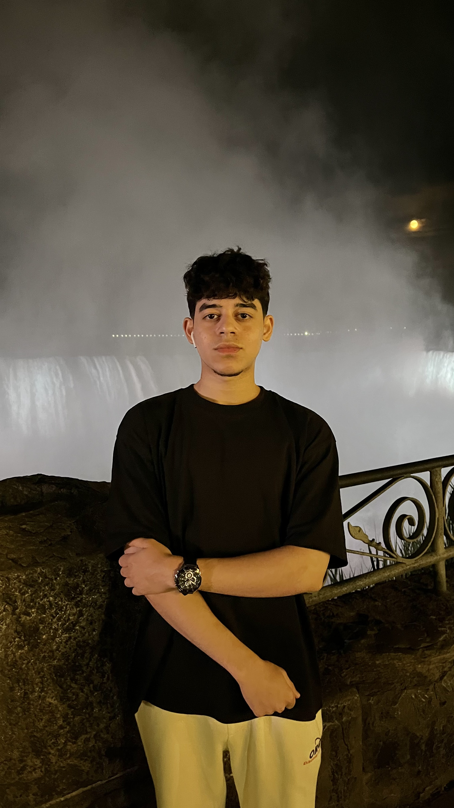
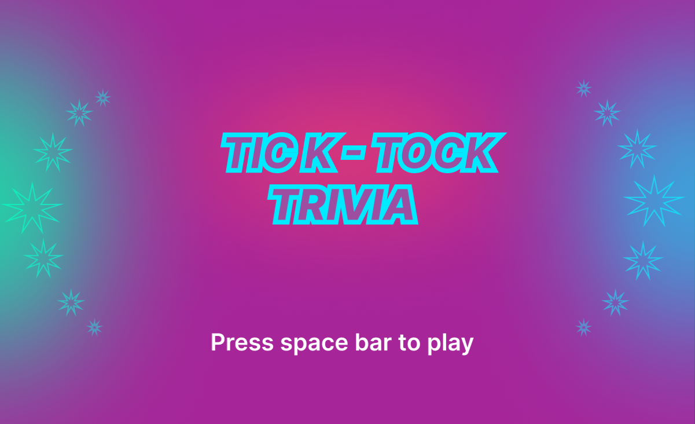

Hello!
I'm Hasan
A UX/UI designer and
full stack developer



~ Institution: York University, Lassonde School of Engineering
~ Degree: Bachelor of Arts, Digital Media Development (2022 - Present)
I’m currently pursuing a Bachelor of Arts in Digital Media Development at York University. I specialize
in creating engaging, interactive experiences through my skills in UX/UI design and full stack development. My background combines
technical proficiency and creative thinking, and I love building projects that bring these two worlds together.
~ Interests: Technology trends, Soccer, Fitness, generative arts.
~ Languages: C, Java, Python, JavaScript, SQL, HTML/CSS
~ Technologies: Unity, SQL Servers, OOP, Databases, IntelliJ, VS Code, Figma, Unix, Max/MSP, Blender, Processing, Power Apps
~ Soft Skills: Project management, team collaboration, Agile development, effective communication
~ Flappy Bird Game Clone (November 2023 - December 2023)
Developed a Flappy Bird clone using p5.js, featuring gravity, pipe generation, collision detection, and a scoring system. The game includes multiple difficulty levels (Easy, Medium, Hard), custom sounds and images, an extra life power-up, and dynamic background animations for an enhanced player experience. Technologies used include JavaScript (p5.js), game mechanics, GUI elements, and audio management.

Click below to play
Note: this is best played on desktop
~ Endless Runner Game (October 2023 - December 2023)
Developed an endless runner game using Unity and C# as part of a project at York University, featuring coin collection, health pickups, and combat modes. Implemented endless level generation with varying obstacles and collectibles, designed intuitive controls, and created responsive gameplay to enhance user experience. Technologies used include Unity, C#, game design, UI/UX, and gameplay mechanics.
Click below to play
Note: this is best played on desktop

~ Animated Logo
This Y2K-inspired 3D animated logo, meticulously crafted in Blender, captures the essence of the early 2000s while infusing modern flair. It showcases my passion for blending nostalgia with contemporary creativity.
~ Tick-Tock Trivia (September 2024 - October 2024)
Developed a geography quiz game using p5.js, featuring timed multiple-choice questions, score tracking, and sound effects for correct and incorrect answers. The game includes custom background images, a restart option, and a real-time timer for added challenge. Technologies used include JavaScript (p5.js), game logic, UI design, and audio integration.
Click below to play
Note: This is best played on desktop
An Interactive Journey Through Space
In this Max MSP project, I created an interactive experience that simulates space exploration. Users can navigate through a virtual space environment filled with celestial objects like the Earth, Moon, and various rotating geometric shapes. The project responds to user input, allowing for movement and interaction with these objects as they float and rotate in a dynamic space setting. The design combines visual elements with spatial audio to enhance the feeling of immersion, providing an engaging and creative way to explore the cosmos in a digital environment.
+1 (437)-766-2928
Email: Hasankerret@gmail.com